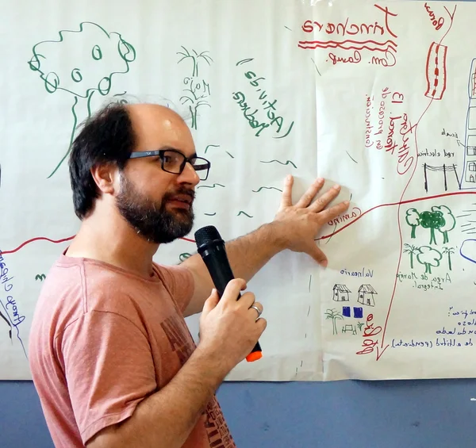

The landscape raises questions
Reading maps and directly observing the territory reveal contrasts that guide the fieldwork.
José Ferreira — international consultant in territorial diagnostics
From reading the landscape to a locally validated project, with those who live in and make decisions about the territory.
One month of work structured in four connected stages, each opening the door to the next: from observing the territory to a project ready for negotiation with local institutions. The method has been applied and refined over nearly twenty years of territorial diagnostics in more than ten countries.
Strengthening coordination among local actors, helping resolve conflicts, and bringing technical assistance closer to small entrepreneurs — particularly family farmers — in organizing value chains and structuring market opportunities.
Reading maps and directly observing the territory reveal contrasts that guide the fieldwork.
Conversations with those who live and work in the territory bring to light what is changing, and why.
Discussing these trends with those who have a broad view of the territory transforms observation into a concrete possibility for change.
The possibility of change is brought to institutional representatives, who translate it into a project ready for negotiation and funding.

Curriculum vitae: 2 pages · 4 pages · Selected works
Diagnostics in more than ten countries, always with the same conviction: stronger projects are born when local knowledge takes part in the decision.
FAO/ESP · EMBRAPA Alimentos e Territórios · ActionAid International · Instituto Camões · ACTUAR · ABIO